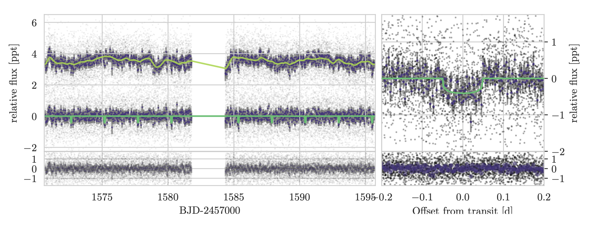
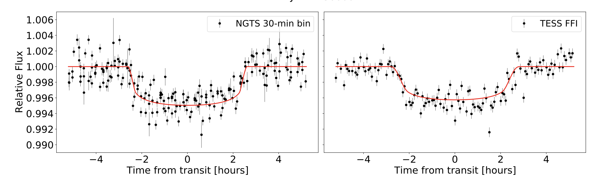
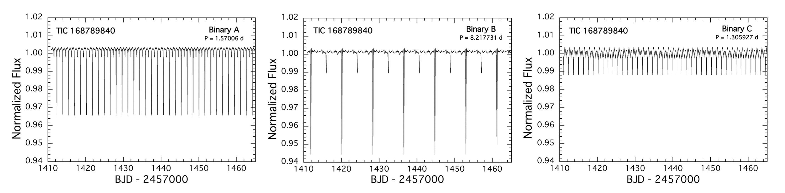

STATUS UPDATE: Remember TESS Cycle 4 proposals are due in today - the 22nd of January!
Welcome TESS followers to this weeks news bulletin!
First we would like to thank all those who attended our various TESS events last week at the winter AAS - for those who missed these events but were registered, recordings are online until the end of the month so catch them whilst you can!
This week we present three papers from the archive, enjoy!
A hot mini-Neptune in the radius valley orbiting solar analogue HD 110113 (Osborn et al 2021):
Using TESS photometric data and HARPS radial velocities the authors have discovered a mini Neptune (HD 110113b) with a radius of 2.05 R⊕, mass of 4.55 M⊕ , and orbit of 2.5 days.
The density of the planet is derived as 2.9 gcm3, indicating that the planets is not entirely rock and that it must be a mini-Neptune with a significant volatile atmosphere.
Given the planets high incident flux it also occupies the radius valley, but seems to have been able to hold onto a substantial (0.1-1%) H-He atmosphere over its 4 Gyr lifetime. Using a simultaneous gaussian process fit on the multiple activity indicators, the authors were able to fit for the strong stellar rotation signal getting a period of 20.8 days from the radial velocities and were able to confirm an additional non-transiting planet with a mass of 10.5 M⊕ and a period of 6.7 days.
NGTS-13b: A hot 4.8 Jupiter-mass planet transiting a subgiant star (Grieves et. al, 2021):
NGTS-13b was discovered by the Next Generation Transit Survey (NGTS). The host star has a V band magnitude of 12.7 and is likely a sub-giant with a log g = 4.04, Teff = 5819 K, M = 1.30 M⊙, and R∗ = 1.79 R⊙.
The transiting planet was discovered by NGTS and has a period of 4.12 days, this was then confirmed using TESS (TIC 454069765). Data from TESS, NGTS, and CORALIE were used to determine that the planet has a radius of Rp = 1.142 RJup, mass of 4.84 MJup, and eccentricity of 0.086.
There is some evidence to suggest that planets around 4MJup represent a boarder between two separate formation scenarios - core accretion and disk instability. It is thought that massive giant planets may also share similar formation mechanisms to lower-mass brown dwarfs. Given this planets mass, it is an important addition to these studies and may further our understanding of formation mechanisms. See the paper for further findings on this system.
TIC 168789840: A Sextuply-Eclipsing Sextuple Star System (Powell et. al., 2021):
In this paper the authors report the discovery of a sextuply-eclipsing sextuple star system from TESS data (sectors 4 & 5), known as TIC 168789840, or TYC 7037-89-1.
This is the first known system of its kind, with three eclipsing binaries. The data for the system was obtained from TESS FFI’s and was also detected within WASP and ASAS-SN surveys. The system contains three gravitationally-bound eclipsing binaries in a hierarchical structure of an inner quadruple system with an outer binary subsystem.
In order to calculate additional parameters the system was followed-up by multiple facilities. Using speckle interferometry a 0.42” separation between the inner and outer system was derived, with an outer period of 2 kyr calculated. The fainter of the two components is a 8.217 day eclipsing binary, which orbits the inner quadruple that contains two eclipsing binaries with periods of 1.570 days and 1.306 days. Each binary has been determined to have a similar mass, radii, and effective temperature. For more information about this unusual system please read the paper.

Fig 1. Taken from Osborn et. al., (2021). TESS photometry of HD 110113. The black dots represent individual 2-minute cadence data and the dark circles represent 30-minute bins. Upper left: TESS PDC_SAP time series with best-fit GP model (both offset by 3.5ppt), and GP-subtracted light curve with the best-fit transit model over-plotted (no offset). Lower left: residuals, with both GP model and transit models subtracted from the light curve. Upper right: phase-folded light curve of HD 110113 b zoomed to the transit. Lower right: phase-folded residuals.

Fig 2. Taken from Grieves et. al., (2021). NGTS binned to 30-minutes and TESS FFI photometry phased to the 4.12 day period of NGTS-13b. The NGTS data are binned to 30-minutes and then phased to the period. The red lines show the EXOFASTv2 model.

Fig 3. Taken from Powell et. al., (2021). Reconstructed TESS light curves for the A, B, and C binaries. These are presented on the same y-axis in order to visualize the relative contributions from each binary